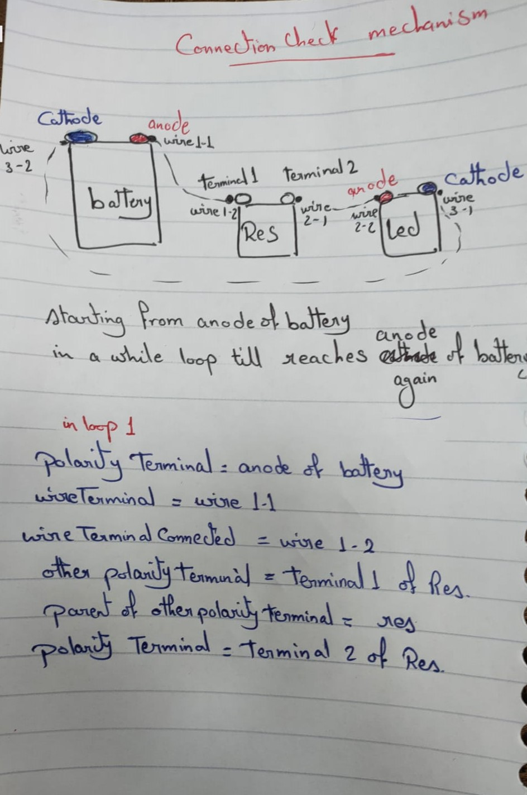
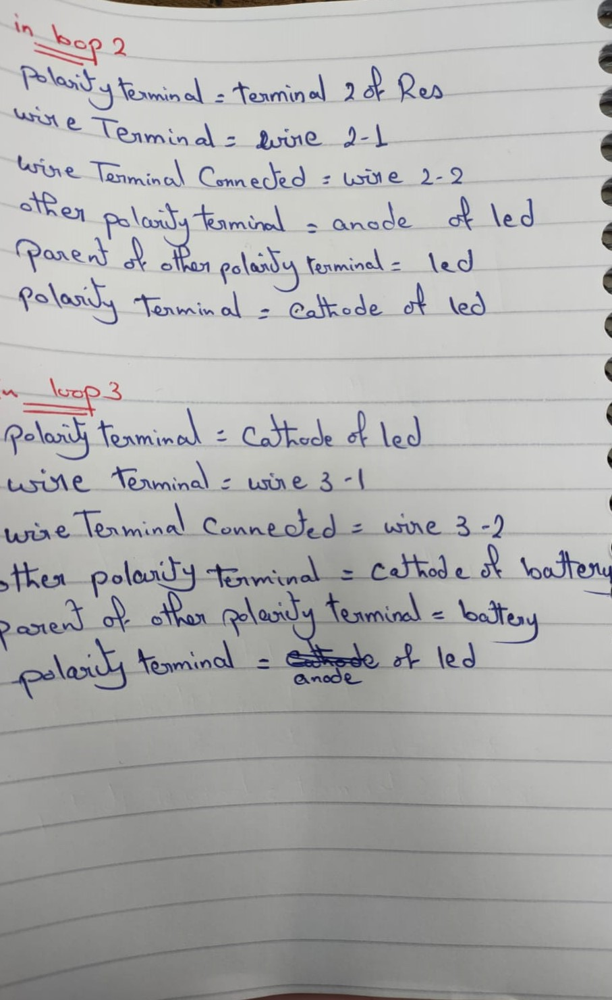

Connection Checking works for any combination of circuit components where it dynamically checks at every node of the circuit to see : 1. if the circuit is connected or not, 2. if the components are connected in correct polarity, 3. if there is a burnt component connected
Here is an example of checking connection for a circuit of: Led, Resistor and battery
 ● Battery, resistor circuit:
● Battery, resistor, Led circuit connected in right polarity:
● Battery, resistor, Led circuit connected with wrong polarity:
the user enter the value of resistor it wants and the nearest real value of this resistance is instantiated
1. User enter the value and symbol through the keypad
2. value is converted to the nearest real value available
3. value is converted into
4. color bands are determined (no1band, no2band, multiplier band) of resistance based on Resistance value in ohms
5. resistance and color bands are assigned to the Instantiated Resistor
by pressing primary button right (A)
1. checks if we are in simulation mode or connection mode
2.1 if in simulation mode: no wire instantiated and cannot connect
2.2 if in connection mode: wire instantiated and connect wire to the terminal of component
(each terminal of components has socket that interacts with the wire terminal to connect to it)
5. resistance and color bands are assigned to the Instantiated Resistor
I first tried making the game 4 months ago using Oculus Integration but the code was very spaghetti and it contained some bugs.That's why later I made it with much cleaner and maintable code
© 2025 Youkii — Built with ☕ and Passion